More Projects — 查看更多作品
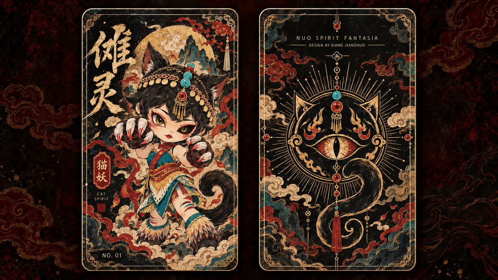
项目角色：文化调研与视觉符号提取 · 角色概念与三视图设计 · 数字雕塑与部件拆分 · 材料实验与涂装 · 成品呈现 —— 把傩文化中神秘、威仪与驱邪纳吉的精神意象，转译为可被把玩的当代潮玩角色。
本系列以傩戏面具、民俗服饰与仪式性装饰为视觉线索，通过拟人角色设计、数字雕塑、材料实验和手工喷涂， 将传统傩文化中神秘、威仪与驱邪纳吉的精神意象转化为当代潮玩角色。
系列包含猫妖拟人、传统傩面幻想与科幻金属傩面三种设计方向。在保留傩面夸张五官、强烈色彩、流苏珠串和 护身饰物等视觉特征的基础上，分别融入灵兽形态、女性角色造型与未来金属材质， 探索传统文化符号在潮玩手办中的多元表达。
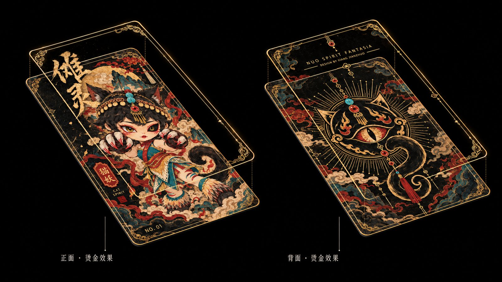
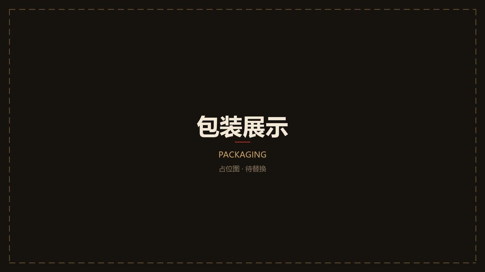
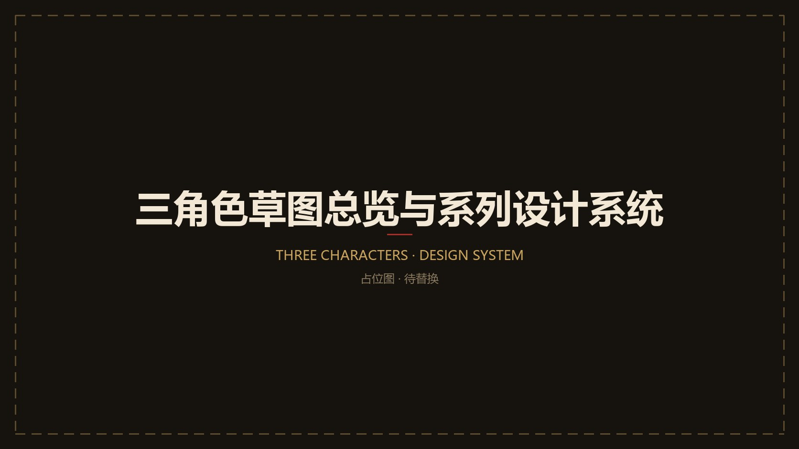
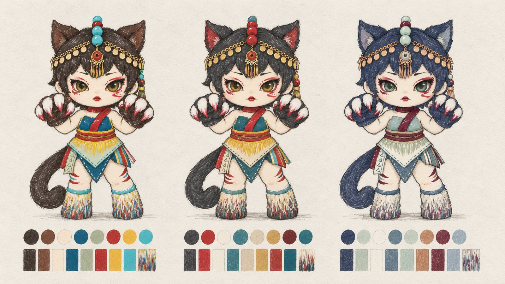
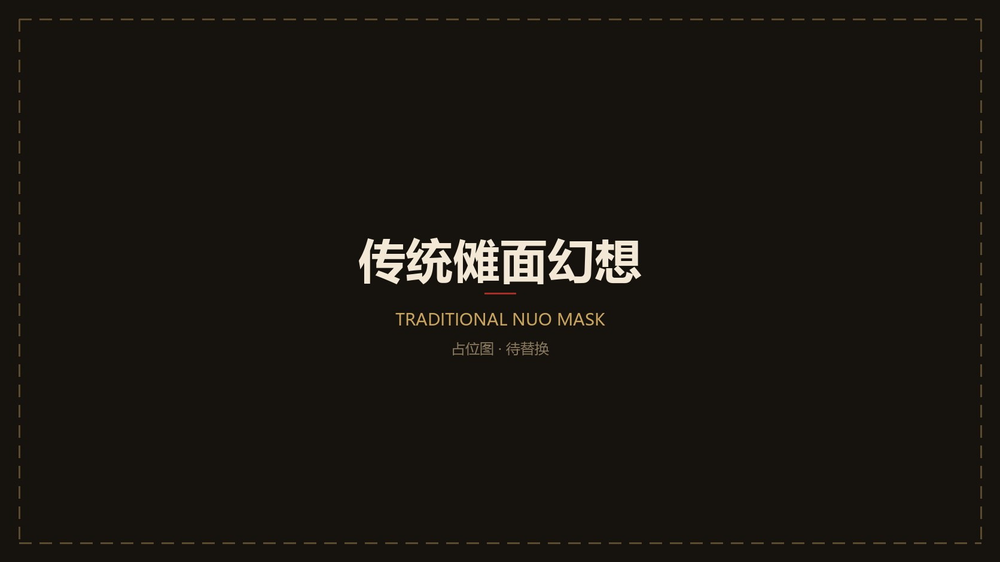
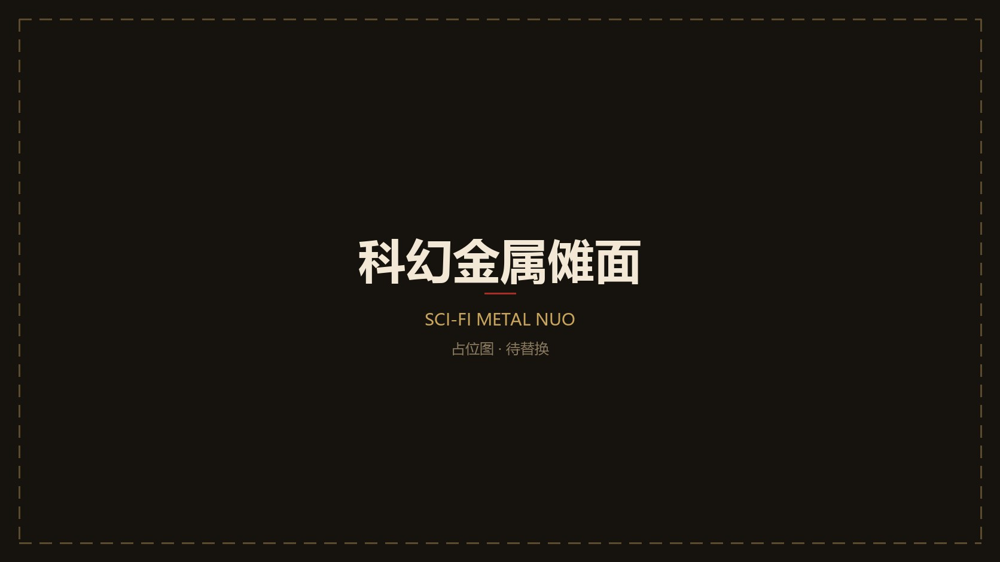
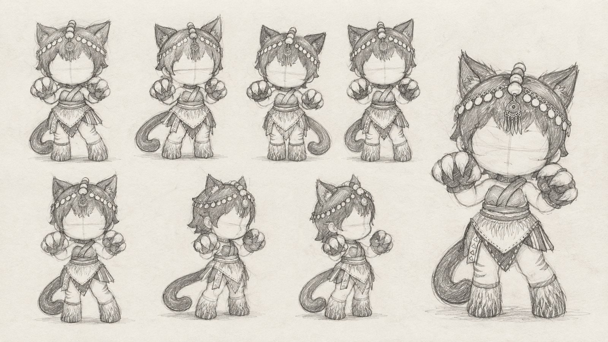
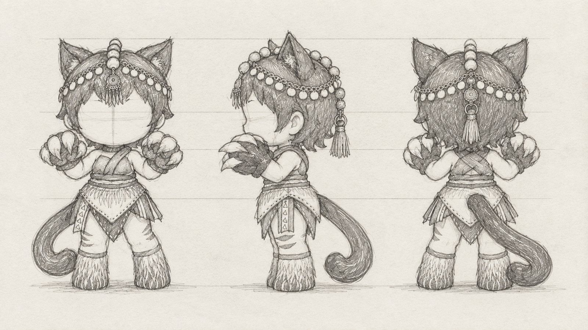
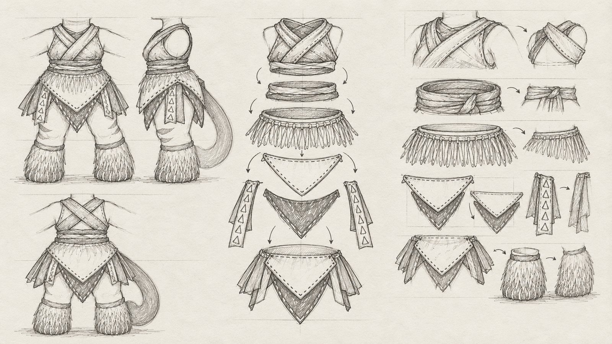
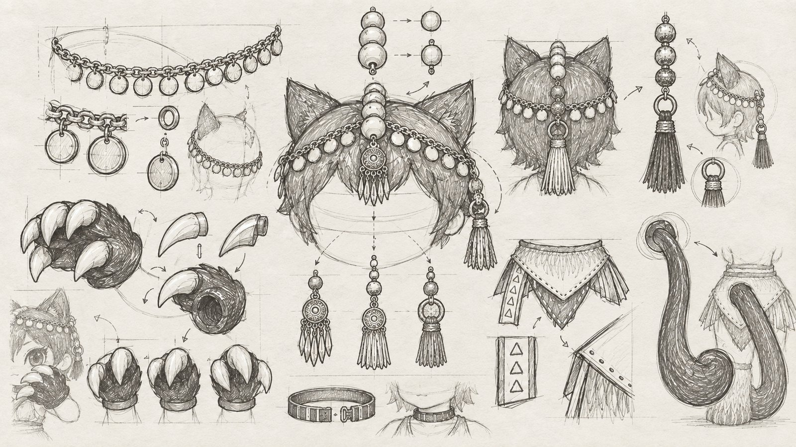
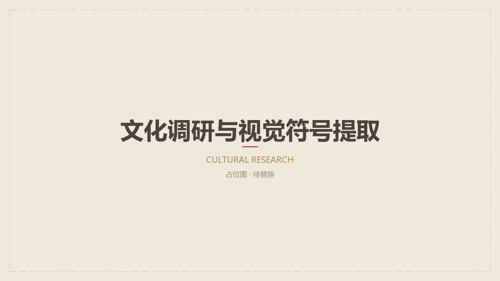
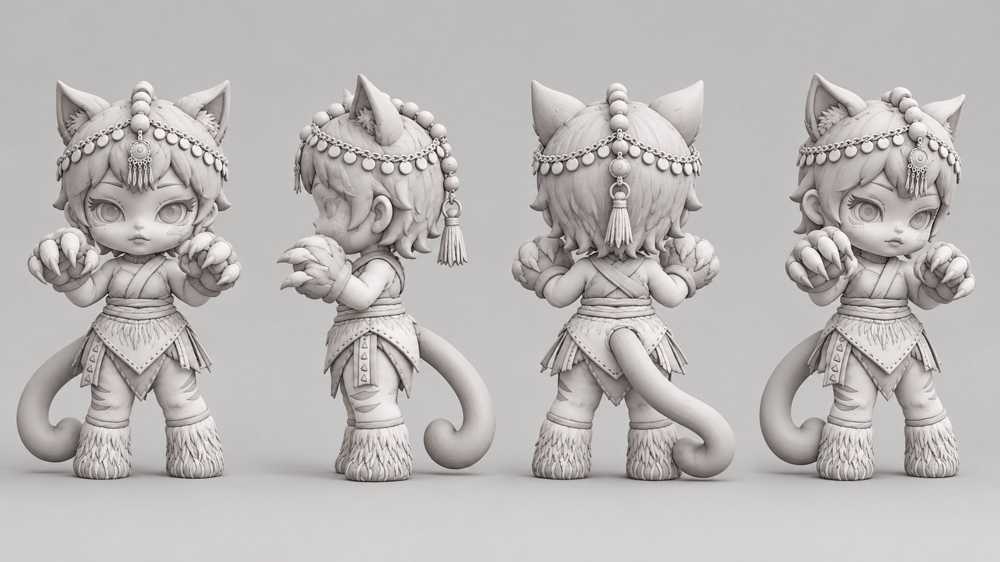
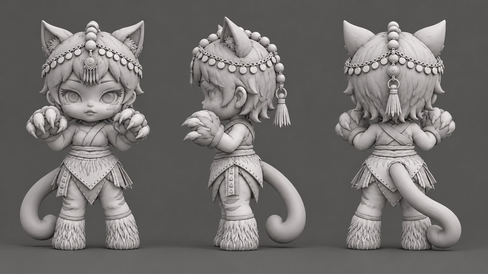